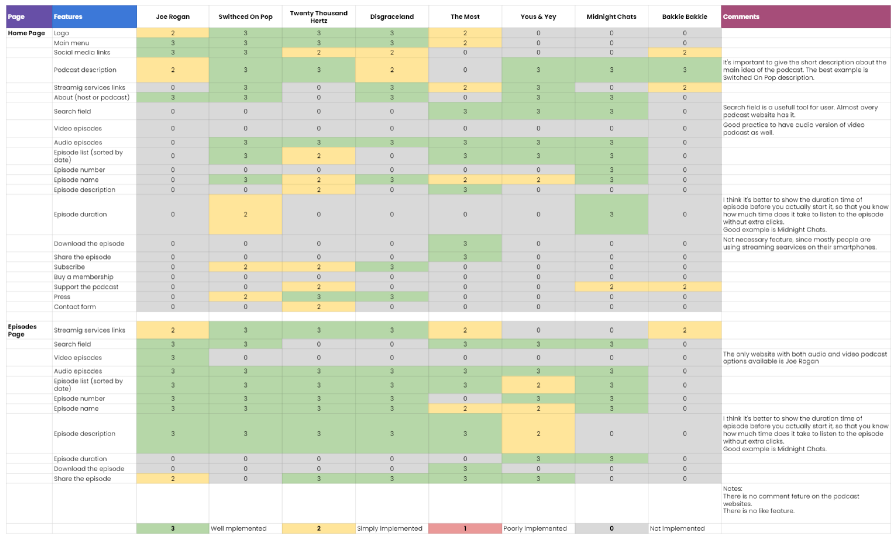

Podcast Website
Stellar Sound Podcast is a podcast about art, music, and creativity. Project was created by inspired and enthusiastic musicians from the Netherlands. Having talks with people of art the podcast aims to tell all about life, motivation and problems that they have.
Filling out a brief with a stakeholder, we identified the main requirements for functionality, stilistic preferences and websites for inspiration.
Stylistic preferences: minimalist, modern, 80’s inspired design.
Main functionality: view videos, play audio, share a podcast in twitter or facebook, open episode in podcast streaming services, contact form, subscription to the newsletters form.
Competitor analysis
I did a detailed analysis of eight different podcast websites. I have systematized all functional solutions in a table and evaluated them in each of the sites. Using the table, I had clear examples of important functionality that should be on the website.
User flow
The main requirement from the client was to have a user subscribed to the newsletters
Typography